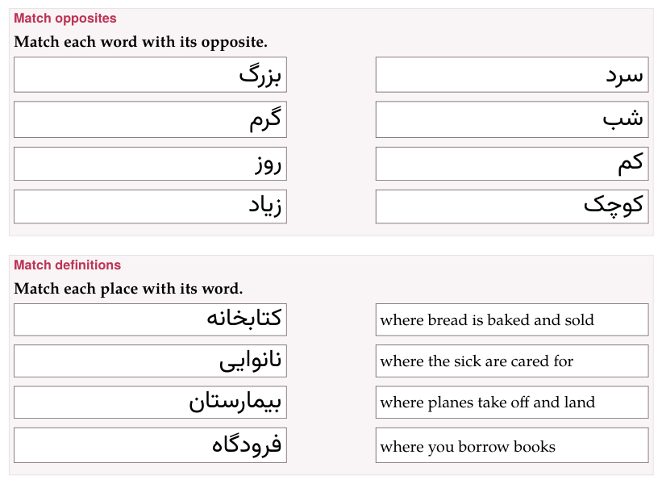

Matching: translations, opposites, definitions
A matching exercise is a set of pairs. One side of each pair stays in place, in a column; the other sides are mixed into a row of blocks, and the learner puts each block beside its partner. Three types share the machinery, and differ in what the pairs are:
| Type | A pair | direction |
|---|---|---|
match-translations | a word, phrase or sentence and its translation | target-to-translation or translation-to-target |
match-opposites | a word or expression and its opposite | — |
match-definitions | a word and its definition | word-to-definition or definition-to-word |
:::exercise match-translationsprompt: …direction: target-to-translation (optional)- left side => right side- …:::Each row is one pair, its two sides split by =>. To write an arrow inside a side, escape it: \=>. Both sides may hold anything a line of the dialect holds — target-language marks, a formula, and pictures: -  => [برف]{tl}. Give every row a different block side: two blocks that read the same are still two blocks, and each is right only beside its own partner.
1. Which side is shown#
Written as word => translation, the pair shows the left side in the column and makes the right side the block to move. direction: turns that round for the two types that have one:
direction: | In the column | The blocks |
|---|---|---|
target-to-translation (the default) | the left side | the right side |
translation-to-target | the right side | the left side |
word-to-definition (the default) | the left side | the right side |
definition-to-word | the right side | the left side |
So the rows can always be written word first, and one field decides whether the learner looks for the translation of a word or for the word of a translation. In the form this is What the learner sees on the left: Word or sentence or Translation for translations, Word or Definition for definitions; a new exercise of either type writes its default into the Markdown. direction: changes nothing on paper, where the left side of each row is always the left column.
2. Match translations#
What it is for: vocabulary, and whole sentences with their meaning.
target: ja:::exercise match-translationsprompt: Match each word with its picture or its meaning.- りんご => - 家 => - 本 => a book- 水 => waterexplanation-correct: りんご *ringo*, an apple; 家 *ie*, a house; 本 *hon*, a book; 水 *mizu*, water.:::3. Match opposites#
What it is for: pairs of antonyms — big and small, early and late — which are learnt best together.
target: ar:::exercise match-oppositesprompt: Match each word with its opposite.- كبير => صغير- طويل => قصير- حار => بارد- جديد => قديمexplanation-correct: *big, small; long, short; hot, cold; new, old.*:::4. Match definitions#
What it is for: a word from its description, or the other way round — the way a monolingual dictionary teaches.
target: es:::exercise match-definitionsprompt: Match each place with its word.direction: definition-to-word- [la biblioteca]{tl} => where you borrow books- [la panadería]{tl} => where bread is baked and sold- [el hospital]{tl} => where the sick are cared for- [el aeropuerto]{tl} => where planes take off and land:::5. On the page#
Each row is the fixed side with an empty box beside it, which says drop or click to choose, and under the rows is the row of blocks, shuffled afresh each time the page opens. A box is filled three ways: drag a block into it; click the box, and a cloud opens beside it with a copy of every block the row holds — the block clicked there goes into the box; or click the block, then the box, which puts the block there and opens no cloud.
A box holds one block, and a block dropped on a full box sends the one that was there back to the row. Click a filled box to put another block there from its cloud — the one it held goes back to the row — or to Empty this match. A click anywhere else, or Escape, puts the cloud away. From the keyboard, Tab reaches a block and a box: Enter or Space on a block picks it, and on a box puts it down — or, with nothing picked, opens the box’s cloud. There are no arrows here, and the ✥ dragging switch never applies: a matching exercise can always be dragged.
In the mobile interface the cloud is the only way to fill a box. An empty box says tap to choose; the row stays where it is, to show what is left, and its blocks are no longer picked up or dragged there. A fill-in’s blanks work the same way (Placement).
Check exercises marks each box: ✓ where it holds the partner of its row, ✕ where it holds another block; a box left empty is framed red and still says drop or click to choose. The exercise is right when every box is.
6. On paper#
Every entry of both columns sits in a frame of its own, so it is plain what is to be joined to what: the student draws a line from a frame on the left to one on the right.
- The two columns are equally wide, with a gap between them for the line.
- The two frames of a row are equally tall, the taller entry deciding, and level with each other; rows are spaced so that frames never touch.
- The right column is mixed by moving it round by one row — each entry goes up one row, and the first goes to the bottom — the same on every build, so every copy of a worksheet is alike.
- An entry in a right-to-left language is set flush right, its continuation lines too; anything else flush left.
- A picture in an entry is printed in its frame, at most an eighth or so of the page high.
- Nothing crosses a frame, at any print size: a word too long for its frame is hyphenated there — even the first word of the entry — and a line may end after a slash; what cannot break at all, a long number say, is set smaller until it fits.

In large print the frames grow heavier with the text; in black and white they are black.
7. In the form#
Pairs lists them as Pair 1, Pair 2…, each with its two fields — Word, phrase, or sentence and Translation, Word or expression and Its opposite, Word and Its definition — with ↑ ↓ and Delete, and + Add pair. An arrow typed in either field is escaped for you.
8. In a deck#
+ Deck copies a matching exercise into an exercise deck as it is written. On the study page it is answered the same way and checked with Check or Enter; when it was wrong, Correct answer shows it solved underneath. Exercises in a deck has the rest.